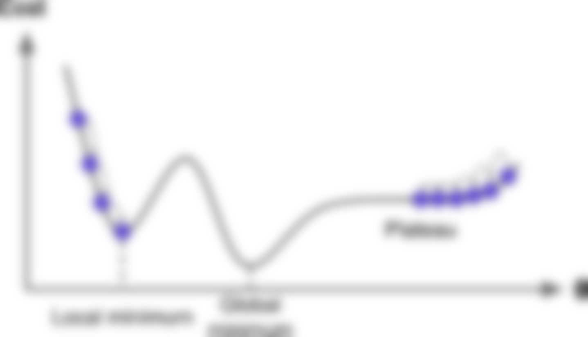
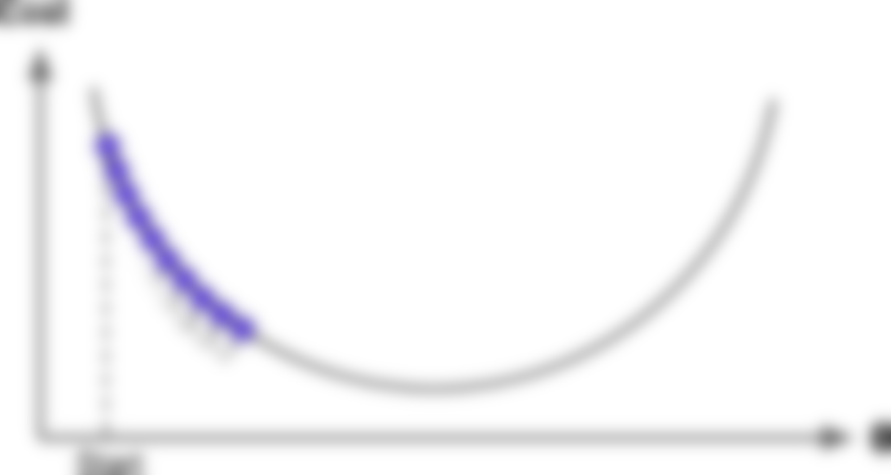
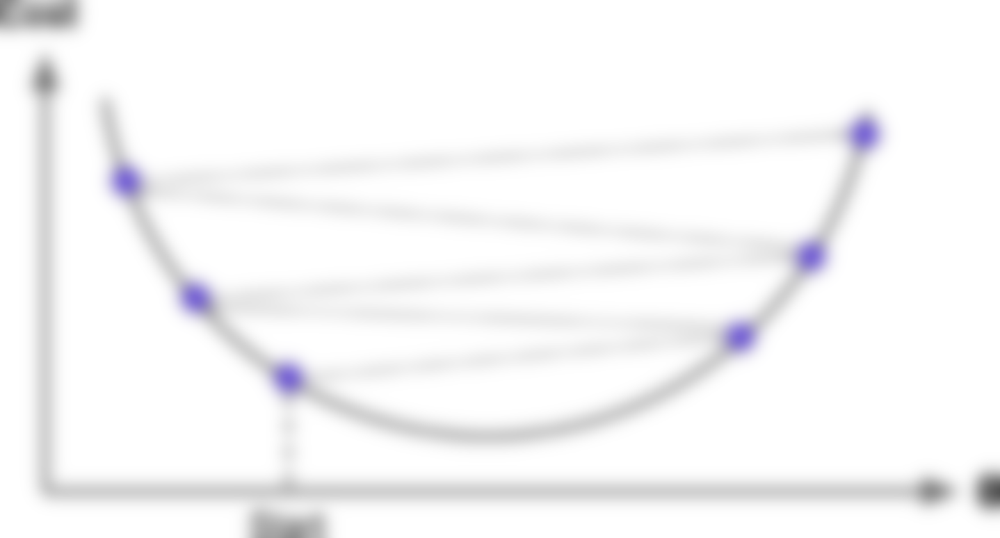
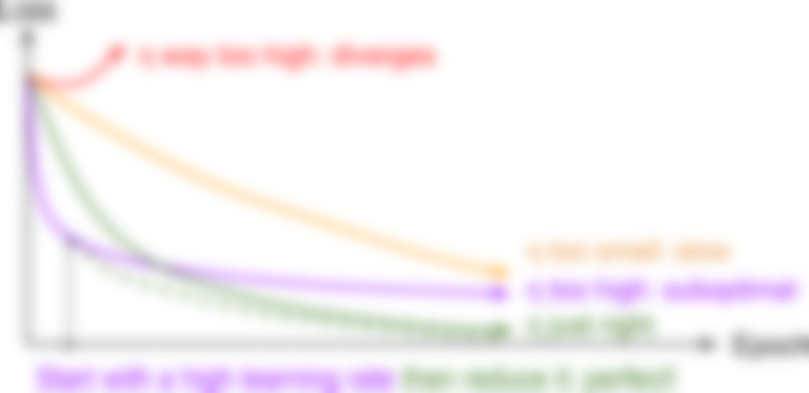

import random
import matplotlib.pyplot as plt
import numpy as np
import pandas as pd
import seaborn as sns
import tensorflow as tf
from sklearn.model_selection import train_test_split
from tensorflow.keras.models import Sequential
from tensorflow.keras.layers import Dense
from tensorflow import keras
from tensorflow.keras import layersMathematics of Deep Learning
ACTL3143 & ACTL5111 Deep Learning for Actuaries
Dr Patrick Laub
Load packages
Dense Layers in Matrices
Logistic regression
Observations: \(\mathbf{x}_{i,\bullet} \in \mathbb{R}^{2}\).
Target: \(y_i \in \{0, 1\}\).
Predict: \(\hat{y}_i = \mathbb{P}(Y_i = 1)\).
The model
For \(\mathbf{x}_{i,\bullet} = (x_{i,1}, x_{i,2})\): \[ z_i = x_{i,1} w_1 + x_{i,2} w_2 + b \]
\[ \hat{y}_i = \sigma(z_i) = \frac{1}{1 + \mathrm{e}^{-z_i}} . \]
Multiple observations
| x_1 | x_2 | y | |
|---|---|---|---|
| 0 | 1 | 2 | 0 |
| 1 | 3 | 4 | 1 |
| 2 | 5 | 6 | 1 |
Let \(w_1 = 1\), \(w_2 = 2\) and \(b = -10\).
Matrix notation
Have \(\mathbf{X} \in \mathbb{R}^{3 \times 2}\).
\[ \mathbf{z} = \mathbf{X} \mathbf{w} + b , \quad \mathbf{a} = \sigma(\mathbf{z}) \]
In Keras
In Keras with fixed weights & bias
Using a softmax output
Observations: \(\mathbf{x}_{i,\bullet} \in \mathbb{R}^{2}\). Predict: \(\hat{y}_{i,j} = \mathbb{P}(Y_i = j)\).
Target: \(\mathbf{y}_{i,\bullet} \in \{(1, 0), (0, 1)\}\).
The model: For \(\mathbf{x}_{i,\bullet} = (x_{i,1}, x_{i,2})\) \[ \begin{aligned} z_{i,1} &= x_{i,1} w_{1,1} + x_{i,2} w_{2,1} + b_1 , \\ z_{i,2} &= x_{i,1} w_{1,2} + x_{i,2} w_{2,2} + b_2 . \end{aligned} \]
\[ \begin{aligned} \hat{y}_{i,1} &= \text{Softmax}_1(\mathbf{z}_i) = \frac{\mathrm{e}^{z_{i,1}}}{\mathrm{e}^{z_{i,1}} + \mathrm{e}^{z_{i,2}}} , \\ \hat{y}_{i,2} &= \text{Softmax}_2(\mathbf{z}_i) = \frac{\mathrm{e}^{z_{i,2}}}{\mathrm{e}^{z_{i,1}} + \mathrm{e}^{z_{i,2}}} . \end{aligned} \]
Multiple observations
Choose:
\(w_{1,1} = 1\), \(w_{2,1} = 2\),
\(w_{1,2} = 3\), \(w_{2,2} = 4\), and
\(b_1 = -10\), \(b_2 = -20\).
Matrix notation
\[ \mathbf{Z} = \mathbf{X} \mathbf{W} + \mathbf{b} , \quad \mathbf{A} = \text{Softmax}(\mathbf{Z}) . \]
In Keras
In Keras with fixed weights & bias
Loss and derivatives
Example: linear regression
\[ \hat{y}(x) = w x + b \]
For some observation \(\{ x_i, y_i \}\), the (MSE) loss is
\[ \text{Loss}_i = (\hat{y}(x_i) - y_i)^2 \]
For a batch of the first \(n\) observations the loss is
\[ \text{Loss}_{1:n} = \frac{1}{n} \sum_{i=1}^n (\hat{y}(x_i) - y_i)^2 \]
Derivatives
Since \(\hat{y}(x) = w x + b\),
\[ \frac{\partial \hat{y}(x)}{\partial w} = x \text{ and } \frac{\partial \hat{y}(x)}{\partial b} = 1 . \]
As \(\text{Loss}_i = (\hat{y}(x_i) - y_i)^2\), we know \[ \frac{\partial \text{Loss}_i}{\partial \hat{y}(x_i) } = 2 (\hat{y}(x_i) - y_i) . \]
Chain rule
\[ \frac{\partial \text{Loss}_i}{\partial \hat{y}(x_i) } = 2 (\hat{y}(x_i) - y_i), \,\, \frac{\partial \hat{y}(x)}{\partial w} = x , \, \text{ and } \, \frac{\partial \hat{y}(x)}{\partial b} = 1 . \]
Putting this together, we have
\[ \frac{\partial \text{Loss}_i}{\partial w} = \frac{\partial \text{Loss}_i}{\partial \hat{y}(x_i) } \times \frac{\partial \hat{y}(x_i)}{\partial w} = 2 (\hat{y}(x_i) - y_i) \, x_i \]
and \[ \frac{\partial \text{Loss}_i}{\partial b} = \frac{\partial \text{Loss}_i}{\partial \hat{y}(x_i) } \times \frac{\partial \hat{y}(x_i)}{\partial b} = 2 (\hat{y}(x_i) - y_i) . \]
Stochastic gradient descent (SGD)
Start with \(\boldsymbol{\theta}_0 = (w, b)^\top = (0, 0)^\top\).
Randomly pick \(i=5\), say \(x_i = 5\) and \(y_i = 5\).
\[ \hat{y}(x_i) = 0 \times 5 + 0 = 0 \Rightarrow \text{Loss}_i = (0 - 5)^2 = 25. \]
The partial derivatives are \[ \begin{aligned} \frac{\partial \text{Loss}_i}{\partial w} &= 2 (\hat{y}(x_i) - y_i) \, x_i = 2 \cdot (0 - 5) \cdot 5 = -50, \text{ and} \\ \frac{\partial \text{Loss}_i}{\partial b} &= 2 (0 - 5) = - 10. \end{aligned} \] The gradient is \(\nabla \text{Loss}_i = (-50, -10)^\top\).
SGD, first iteration
Start with \(\boldsymbol{\theta}_0 = (w, b)^\top = (0, 0)^\top\).
Randomly pick \(i=5\), say \(x_i = 5\) and \(y_i = 5\).
The gradient is \(\nabla \text{Loss}_i = (-50, -10)^\top\).
Use learning rate \(\eta = 0.01\) to update \[ \begin{aligned} \boldsymbol{\theta}_1 &= \boldsymbol{\theta}_0 - \eta \nabla \text{Loss}_i \\ &= \begin{pmatrix} 0 \\ 0 \end{pmatrix} - 0.01 \begin{pmatrix} -50 \\ -10 \end{pmatrix} \\ &= \begin{pmatrix} 0 \\ 0 \end{pmatrix} + \begin{pmatrix} 0.5 \\ 0.1 \end{pmatrix} = \begin{pmatrix} 0.5 \\ 0.1 \end{pmatrix}. \end{aligned} \]
SGD, second iteration
Start with \(\boldsymbol{\theta}_1 = (w, b)^\top = (0.5, 0.1)^\top\).
Randomly pick \(i=9\), say \(x_i = 9\) and \(y_i = 17\).
The gradient is \(\nabla \text{Loss}_i = (-223.2, -24.8)^\top\).
Use learning rate \(\eta = 0.01\) to update \[ \begin{aligned} \boldsymbol{\theta}_2 &= \boldsymbol{\theta}_1 - \eta \nabla \text{Loss}_i \\ &= \begin{pmatrix} 0.5 \\ 0.1 \end{pmatrix} - 0.01 \begin{pmatrix} -223.2 \\ -24.8 \end{pmatrix} \\ &= \begin{pmatrix} 0.5 \\ 0.1 \end{pmatrix} + \begin{pmatrix} 2.232 \\ 0.248 \end{pmatrix} = \begin{pmatrix} 2.732 \\ 0.348 \end{pmatrix}. \end{aligned} \]
Batch gradient descent (BGD)
For the first \(n\) observations \(\text{Loss}_{1:n} = \frac{1}{n} \sum_{i=1}^n \text{Loss}_i\) so
\[ \begin{aligned} \frac{\partial \text{Loss}_{1:n}}{\partial w} &= \frac{1}{n} \sum_{i=1}^n \frac{\partial \text{Loss}_{i}}{\partial w} = \frac{1}{n} \sum_{i=1}^n \frac{\partial \text{Loss}_{i}}{\hat{y}(x_i)} \frac{\partial \hat{y}(x_i)}{\partial w} \\ &= \frac{1}{n} \sum_{i=1}^n 2 (\hat{y}(x_i) - y_i) \, x_i . \end{aligned} \]
\[ \begin{aligned} \frac{\partial \text{Loss}_{1:n}}{\partial b} &= \frac{1}{n} \sum_{i=1}^n \frac{\partial \text{Loss}_{i}}{\partial b} = \frac{1}{n} \sum_{i=1}^n \frac{\partial \text{Loss}_{i}}{\hat{y}(x_i)} \frac{\partial \hat{y}(x_i)}{\partial b} \\ &= \frac{1}{n} \sum_{i=1}^n 2 (\hat{y}(x_i) - y_i) . \end{aligned} \]
BGD, first iteration (\(\boldsymbol{\theta}_0 = \boldsymbol{0}\))
| x | y | y_hat | loss | dL/dw | dL/db | |
|---|---|---|---|---|---|---|
| 0 | 1 | 0.99 | 0 | 0.98 | -1.98 | -1.98 |
| 1 | 2 | 3.00 | 0 | 9.02 | -12.02 | -6.01 |
| 2 | 3 | 5.01 | 0 | 25.15 | -30.09 | -10.03 |
So \(\nabla \text{Loss}_{1:3}\) is
so with \(\eta = 0.1\) then \(\boldsymbol{\theta}_1\) becomes
BGD, second iteration
| x | y | y_hat | loss | dL/dw | dL/db | |
|---|---|---|---|---|---|---|
| 0 | 1 | 0.99 | 2.07 | 1.17 | 2.16 | 2.16 |
| 1 | 2 | 3.00 | 3.54 | 0.29 | 2.14 | 1.07 |
| 2 | 3 | 5.01 | 5.01 | 0.00 | -0.04 | -0.01 |
So \(\nabla \text{Loss}_{1:3}\) is
so with \(\eta = 0.1\) then \(\boldsymbol{\theta}_2\) becomes
Optimisation
Gradient-based learning
Make a guess:
Show derivatives: Reveal function:
Gradient descent pitfalls
Potential problems with gradient descent.
Source: Aurélien Géron (2019), Hands-On Machine Learning with Scikit-Learn, Keras, and TensorFlow, 2nd Edition, Figure 4-6.
Go over all the training data
Called batch gradient descent.
Pick a random training example
Called stochastic gradient descent.
Take a group of training examples
Called mini-batch gradient descent.
Mini-batch gradient descent
Why?
- Because we have to (data is too big)
- Because it is faster (lots of quick noisy steps > a few slow super accurate steps)
- The noise helps us jump out of local minima
Source: Aurélien Géron (2019), Hands-On Machine Learning with Scikit-Learn, Keras, and TensorFlow, 2nd Edition, Figure 4-6.
Learning rates


Source: Aurélien Géron (2019), Hands-On Machine Learning with Scikit-Learn, Keras, and TensorFlow, 2nd Edition, Figures 4-4 and 4-5.
Learning rates #2
Source: Matt Henderson (2021), Twitter post
Learning rate schedule
Learning curves for various learning rates η
In training the learning rate may be tweaked manually.
Source: Aurélien Géron (2019), Hands-On Machine Learning with Scikit-Learn, Keras, and TensorFlow, 2nd Edition, Figure 11-8.
We need non-zero derivatives
This is why can’t use accuracy as the loss function for classification.
This is why we can have the dead ReLU problem.
Dissecting model.fit
Spoiler: it's going to be a 20-lines Python script that calls model.fіt()https://t.co/AqLZSQ0kwD
— François Chollet (@fchollet) April 25, 2022
Source: Twitter
Load MNIST dataset
(X_train, y_train), (X_test, y_test) = keras.datasets.mnist.load_data()
X_train = X_train.astype("float32") / 255.0
X_test = X_test.astype("float32") / 255.0
# Reserve 10,000 samples for validation.
X_val = X_train[-10000:]
y_val = y_train[-10000:]
X_train = X_train[:-10000]
y_train = y_train[:-10000]
# Prepare the training dataset.
batch_size = 64
train_dataset = tf.data.Dataset.from_tensor_slices((X_train, y_train))
# train_dataset = train_dataset.shuffle(buffer_size=1024)
train_dataset = train_dataset.batch(batch_size)
# Prepare the validation dataset.
val_dataset = tf.data.Dataset.from_tensor_slices((X_val, y_val))
val_dataset = val_dataset.batch(batch_size)Adapted from: Chollet (2020), Writing a training loop from scratch, Keras docs.
A basic MNIST model
def build_model(seed=42):
random.seed(seed)
return keras.Sequential([
layers.Flatten(input_shape=(28, 28)),
layers.Dense(128, activation="relu"),
layers.Dense(10)
])
firstModel = build_model()
firstModel.summary(print_fn=skip_empty)Model: "sequential_4"
_________________________________________________________________
Layer (type) Output Shape Param #
=================================================================
flatten (Flatten) (None, 784) 0
dense_4 (Dense) (None, 128) 100480
dense_5 (Dense) (None, 10) 1290
=================================================================
Total params: 101,770
Trainable params: 101,770
Non-trainable params: 0
_________________________________________________________________Adapted from: Chollet (2020), Writing a training loop from scratch, Keras docs.
Fitting like normal
Specify fitting requirements.
Create a model & run model.fit.
Going through the epochs
Create a new model:
Repeatedly call model.fit:
Warning
Reusing the same optimiser works here because SGD is stateless. In contrast, RMSprop & Adam have internal state (e.g. to calculate/store momentum).
Are they exactly the same?
Going through the batches
Create a new model:
Repeatedly call train_on_batch:
# Go through all the training data multiple times.
for epoch in range(epochs):
# Go through the entire training dataset in batches.
for (X_batch_train, y_batch_train) in train_dataset:
# Update weights & biases to make this batch's predictions better.
# model.train_on_batch(X_batch_train, y_batch_train)
# BUG: 'train_on_batch' hangs on Windows.
# Later on, check to see if an updated TF fixes it.
pass
print(same_last_layer(firstModel, model))FalseAdapted from: Chollet (2020), Writing a training loop from scratch, Keras docs.
What is model.fit() really doing?
%%time
model = build_model() # No model.compile!
# Go through all the training data multiple times.
for epoch in range(epochs):
# Go through the entire training dataset in batches.
for (X_batch_train, y_batch_train) in train_dataset:
# Calculate the loss, while keeping track of gradients.
with tf.GradientTape() as tape:
y_pred = model(X_batch_train, training=True)
loss_value = loss_fn(y_batch_train, y_pred)
# Calculate the gradients & take a SGD step.
grads = tape.gradient(loss_value, model.trainable_weights)
optimizer.apply_gradients(zip(grads, model.trainable_weights))
print(same_last_layer(firstModel, model))True
CPU times: total: 297 ms
Wall time: 5.46 sAdapted from: Chollet (2020), Writing a training loop from scratch, Keras docs.
What about optimizer stuff?
\[ \boldsymbol{\theta}_i = \boldsymbol{\theta}_{i-1} - \eta \nabla \text{LossOnBatch} \\ \]
model = build_model()
for epoch in range(epochs):
for (X_batch_train, y_batch_train) in train_dataset:
# Calculate the loss, while keeping track of gradients.
with tf.GradientTape() as tape:
y_pred = model(X_batch_train, training=True)
loss_value = loss_fn(y_batch_train, y_pred)
# Calculate the gradients & take a SGD step.
grads = tape.gradient(loss_value, model.trainable_weights)
for grad, weight in zip(grads, model.trainable_weights):
# Take a small negative step in the direction of the gradient.
weight.assign(weight - lr * grad)
print(same_last_layer(firstModel, model))TrueAdapted from: Chollet (2020), Writing a training loop from scratch, Keras docs.
Inspecting the gradients
[<tf.Tensor: shape=(784, 128), dtype=float32, numpy=
array([[0., 0., 0., ..., 0., 0., 0.],
[0., 0., 0., ..., 0., 0., 0.],
[0., 0., 0., ..., 0., 0., 0.],
...,
[0., 0., 0., ..., 0., 0., 0.],
[0., 0., 0., ..., 0., 0., 0.],
[0., 0., 0., ..., 0., 0., 0.]], dtype=float32)>,
<tf.Tensor: shape=(128,), dtype=float32, numpy=
array([ 0.01, -0. , -0.02, 0.02, -0.01, 0.01, 0. , -0.03, -0.01,
0.02, -0.03, -0.01, 0.01, -0.01, -0. , 0. , -0.01, 0. ,
0.01, 0.01, -0.01, 0.01, -0.02, -0. , 0.04, 0.05, 0. ,
-0.04, -0.03, 0.06, -0. , 0.01, -0.02, 0.01, -0.03, 0.01,
0. , -0.01, -0.01, 0.01, 0.06, -0. , 0.01, -0. , -0.01,
0.01, -0.04, 0.01, 0. , 0.03, 0. , 0.02, -0.03, 0.01,
-0. , 0.01, -0.05, 0.06, 0.01, 0. , 0.02, -0.02, -0.01,
0.04, -0.02, 0.02, -0.05, 0.02, 0. , 0. , 0. , -0.01,
0.06, -0.01, -0.04, 0.02, -0.01, -0.02, 0.02, 0.01, -0.05,
-0.07, 0.01, -0. , 0.01, 0. , 0. , -0.01, 0.01, -0.06,
0. , 0. , 0.01, -0.02, -0.01, 0.01, 0.01, 0.02, 0.03,
-0.01, -0.04, -0.01, -0.02, -0.02, 0. , 0. , -0.02, -0. ,
-0.02, -0.03, -0.02, -0.02, 0.04, -0.02, 0.03, 0.03, 0.05,
0. , -0.01, -0.01, 0.02, -0. , 0.03, -0.02, -0.02, 0.01,
0.01, 0.06], dtype=float32)>,
<tf.Tensor: shape=(128, 10), dtype=float32, numpy=
array([[-1.57e-03, 5.26e-04, 5.21e-03, ..., 5.26e-04, 1.54e-03,
5.21e-03],
[-2.40e-03, 5.08e-06, 2.75e-05, ..., 3.69e-05, 1.19e-04,
1.82e-05],
[-2.92e-03, 2.62e-03, 2.05e-02, ..., 2.52e-03, -1.68e-02,
2.56e-04],
...,
[-3.93e-02, 5.23e-04, 5.74e-02, ..., 9.99e-04, -6.75e-04,
3.01e-03],
[-1.05e-01, 2.49e-03, 9.37e-02, ..., 8.29e-03, 1.82e-02,
4.05e-03],
[-9.47e-02, 2.75e-03, 1.02e-01, ..., 7.20e-03, 1.36e-02,
1.32e-02]], dtype=float32)>,
<tf.Tensor: shape=(10,), dtype=float32, numpy=
array([-0.08, 0. , 0.06, -0.01, -0.02, -0.06, 0.11, 0.01, -0.01,
0.01], dtype=float32)>]Calculating training losses
model = build_model()
for epoch in range(epochs):
loss_history = []
for (X_batch_train, y_batch_train) in train_dataset:
with tf.GradientTape() as tape:
y_pred = model(X_batch_train, training=True)
loss_value = loss_fn(y_batch_train, y_pred)
loss_history.append(loss_value.numpy())
grads = tape.gradient(loss_value, model.trainable_weights)
optimizer.apply_gradients(zip(grads, model.trainable_weights))
print(f"[Epoch {epoch}] Loss avg {np.mean(loss_history)}")[Epoch 0] Loss avg 0.9254943132400513[Epoch 1] Loss avg 0.4416849613189697Adapted from: Chollet (2020), Writing a training loop from scratch, Keras docs.
Calculating validation losses
model = build_model()
model.compile(optimizer, loss_fn)
for epoch in range(epochs):
model.fit(train_dataset, epochs=1, verbose=0)
val_losses = []
for (X_batch_val, y_batch_val) in val_dataset:
y_pred = model(X_batch_val)
val_losses.append(loss_fn(y_batch_val, y_pred))
print(f"[Epoch {epoch}] Val loss avg {np.mean(val_losses)}")[Epoch 0] Val loss avg 0.468784362077713[Epoch 1] Val loss avg 0.35841864347457886Adapted from: Chollet (2020), Writing a training loop from scratch, Keras docs.
Comparable training & val. losses
[0.9254468679428101, 0.4413444399833679]
[0.4692622125148773, 0.35921722650527954]model = build_model()
model.compile(optimizer, loss_fn)
for epoch in range(epochs):
model.fit(train_dataset, epochs=1, verbose=0)
# Now the epoch is over and the model isn't being updated,
# calculate the losses on train and validation data.
train_loss = model.evaluate(train_dataset, verbose=0)
val_loss = model.evaluate(val_dataset, verbose=0)
print(f"[Epoch {epoch}] Train loss {train_loss} Val loss {val_loss}")[Epoch 0] Train loss 0.511987566947937 Val loss 0.4692622125148773[Epoch 1] Train loss 0.3935200273990631 Val loss 0.35921722650527954Adapted from: Chollet (2020), Writing a training loop from scratch, Keras docs.
How to use losses
A common strategy is to:
- Keep fitting bigger and bigger models until training error is \(\approx 0\). This will likely produce a huge error on the validation set, called generalisation error, due to overfitting.
- Apply regularisation/dropout/early stopping to reduce the generalisation error.
- Watch out for overfitting the validation set by looking at the test loss.
What is this with syntax?
Example, opening a file:
Most basic way is:
Haikus from http://www.libertybasicuniversity.com/lbnews/nl107/haiku.htm
What is GradientTape()?
x = tf.Variable(3.0)
with tf.GradientTape() as tape:
y = x**2
dy_dx = tape.gradient(y, x)
dy_dx.numpy()6.0Source: Tensorflow (2022), Introduction to gradients and automatic differentiation, Tensorflow docs.
Computation Graphs & Automatic Differentiation
Compile using graph mode
%%time
for epoch in range(epochs):
for (X_batch_train, y_batch_train) in train_dataset:
loss_value = train_step(X_batch_train, y_batch_train)
print(same_last_layer(firstModel, model))True
CPU times: total: 172 ms
Wall time: 1.41 sAdapted from: Chollet (2020), Writing a training loop from scratch, Keras docs.
Example computational graph

Each basic equation is broken down to its core components.
Source: Aurélien Géron (2017), Hands-On Machine Learning with Scikit-Learn & TensorFlow, 1st Edition, Figure 9.1.
Why?

Tensorflow figures out the smartest way to evaluate your equations.
Source: Aurélien Géron (2017), Hands-On Machine Learning with Scikit-Learn & TensorFlow, 1st Edition, Figure 9.2.
Example: linear regression
\[ \hat{y}(x) = w x + b \]
For some observation \(\{ x_i, y_i \}\), the (MSE) loss is
\[ \text{Loss}_i = (\hat{y}(x_i) - y_i)^2 \]
For a batch of the first \(n\) observations the loss is
\[ \text{Loss}_{1:n} = \frac{1}{n} \sum_{i=1}^n (\hat{y}(x_i) - y_i)^2 \]
Derivatives
Since \(\hat{y}(x) = w x + b\),
\[ \frac{\partial \hat{y}(x)}{\partial w} = x \text{ and } \frac{\partial \hat{y}(x)}{\partial b} = 1 . \]
As \(\text{Loss}_i = (\hat{y}(x_i) - y_i)^2\), we know \[ \frac{\partial \text{Loss}_i}{\partial \hat{y}(x_i) } = 2 (\hat{y}(x_i) - y_i) . \]
Chain rule
\[ \frac{\partial \text{Loss}_i}{\partial \hat{y}(x_i) } = 2 (\hat{y}(x_i) - y_i), \,\, \frac{\partial \hat{y}(x)}{\partial w} = x , \, \text{ and } \, \frac{\partial \hat{y}(x)}{\partial b} = 1 . \]
Putting this together, we have
\[ \frac{\partial \text{Loss}_i}{\partial w} = \frac{\partial \text{Loss}_i}{\partial \hat{y}(x_i) } \times \frac{\partial \hat{y}(x_i)}{\partial w} = 2 (\hat{y}(x_i) - y_i) \, x_i \]
and \[ \frac{\partial \text{Loss}_i}{\partial b} = \frac{\partial \text{Loss}_i}{\partial \hat{y}(x_i) } \times \frac{\partial \hat{y}(x_i)}{\partial b} = 2 (\hat{y}(x_i) - y_i) . \]
Backpropagation
Linear regression graph
%%{init: {'themeVariables': {'edgeLabelBackground': 'white', 'fontSize': '25px'}}}%%
graph LR
x[x]:::data --> times(( <sup>.</sup> ))
w[w]:::param --> times
times -->|z| plus(( + ))
b[b]:::param --> plus
plus -->|yp| minus(( - ))
y[y]:::data --> minus
minus --> loss[loss]
classDef data fill:aqua,stroke-width:0px
classDef param fill:lightGreen,stroke-width:0px
style loss fill:white,stroke-width:0px
Forward pass
%%{init: {'themeVariables': { 'edgeLabelBackground': 'white', 'fontSize': '25px'}}}%%
graph LR
x[x = 2]:::data --> times(( <sup>.</sup> ))
w[w = 3]:::param --> times
times -->|z = 6| plus(( + ))
b[b = 1]:::param --> plus
plus -->|yp = 7| minus(( - ))
y[y = 4]:::data --> minus
minus --> loss[loss = 3]
classDef data fill:aqua,stroke-width:0px
classDef param fill:lightGreen,stroke-width:0px
style loss fill:white,stroke-width:0px
Backward pass
%%{init: {'themeVariables': { 'edgeLabelBackground': 'white', 'fontSize': '25px'}}}%%
graph LR
x[x = 2]:::data --- times(( <sup>.</sup> ))
w[w = 3]:::param ---|"grad(z, w) = 2"| times
times ---|"z=6<br>grad(yp, z) = 1"| plus(( + ))
b[b = 1]:::param ---|"grad(yp, b) = 1"| plus
plus ---|"yp = 7<br>grad(loss, yp) = 1"| minus(( - ))
y[y = 4]:::data --- minus
minus --- loss[loss = 3]
classDef data fill:aqua,stroke-width:0px
classDef param fill:lightGreen,stroke-width:0px
style loss fill:white,stroke-width:0px
That’s it
And with that, you just saw backpropagation in action! Backpropagation is simply the application of the chain rule to a computation graph. There’s nothing more to it. Backpropagation starts with the final loss value and works backward from the top layers to the bottom layers, computing the contribution that each parameter had in the loss value. That’s where the name “backpropagation” comes from: we “back propagate” the loss contributions of different nodes in a computation graph.
Source: François Chollet (2021), Deep Learning with Python, Second Edition, Chapter 2.
Batch gradient descent
For the first \(n\) observations \(\text{Loss}_{1:n} = \frac{1}{n} \sum_{i=1}^n \text{Loss}_i\) so
\[ \begin{aligned} \frac{\partial \text{Loss}_{1:n}}{\partial w} &= \frac{1}{n} \sum_{i=1}^n \frac{\partial \text{Loss}_{i}}{\partial w} = \frac{1}{n} \sum_{i=1}^n \frac{\partial \text{Loss}_{i}}{\hat{y}(x_i)} \frac{\partial \hat{y}(x_i)}{\partial w} \\ &= \frac{1}{n} \sum_{i=1}^n 2 (\hat{y}(x_i) - y_i) \, x_i . \end{aligned} \]
\[ \begin{aligned} \frac{\partial \text{Loss}_{1:n}}{\partial b} &= \frac{1}{n} \sum_{i=1}^n \frac{\partial \text{Loss}_{i}}{\partial b} = \frac{1}{n} \sum_{i=1}^n \frac{\partial \text{Loss}_{i}}{\hat{y}(x_i)} \frac{\partial \hat{y}(x_i)}{\partial b} \\ &= \frac{1}{n} \sum_{i=1}^n 2 (\hat{y}(x_i) - y_i) . \end{aligned} \]
Bespoke derivatives vs. autodiff
| x | y | dL/dw | |
|---|---|---|---|
| 0 | 1.0 | 0.99 | -1.98 |
| 1 | 2.0 | 3.00 | -12.02 |
| 2 | 3.0 | 5.01 | -30.09 |
The magic of autodiff
129 ms ± 1.36 ms per loop (mean ± std. dev. of 7 runs, 10 loops each)203 ms ± 408 µs per loop (mean ± std. dev. of 7 runs, 10 loops each)Glossary
- accuracy
- batches, batch size
- cross-entropy loss
- gradient-based learning, hill-climbing
- metrics
- overfitting
- shallow neural network
- stochastic (mini-batch) gradient descent
- universal approximation theorem
Slides: Dr Patrick Laub (@PatrickLaub).